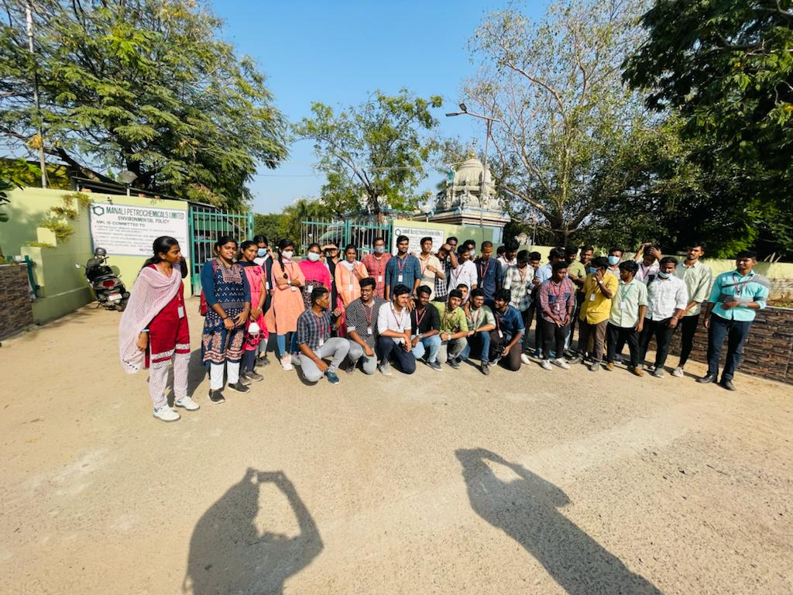
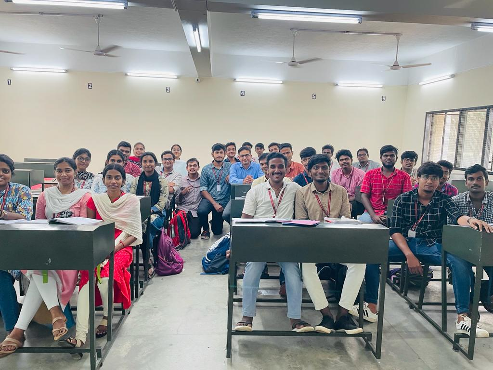
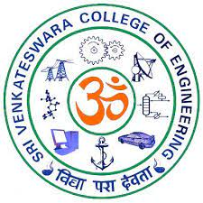

"Tech Enthusiast with a Creative Edge.
Bringing a fresh perspective to IT, I'm passionate about innovation and problem-solving. Thriving on developing cutting-edge solutions, my unconventional journey equips me to make a splash in the dynamic IT landscape. Let's connect and infuse creativity into your team.
Versatile IT Engineer with a Foundation in Chemical Engineering | Bridging Science and Technology for Innovative Solutions"
Professional Skills
TestNG and Cucumber : ★★★☆☆
Java : ★★★★☆
Selenium : ★★★☆☆
HTML and CSS : ★★★★☆
C (Computer language) : ★★★★★
Canva : ★★★★★
Content Developing : ★★★★★
AspenPlus : ★★☆☆☆
Mathlab : ★★☆☆☆
Simulink : ★★☆☆☆
Editing : ★★★★★
Presentation Skills : ★★★★★
Design Thinking : ★★★★★
Data Interpretation : ★★★★☆
Communication
English : ★★★★★
Tamil : ★★★★★
Personal Skills
Creative Spirit
Reliable and Professional
Organized
Time Management
Team Player
Fast Learner
Motivated
Education and Work Experience
Present : July 2023
At Cognizant, I am proud to be part of a global team of innovative professionals who are committed to delivering excellence in every aspect of software engineering. With access to cutting-edge technologies, extensive training programs, and a collaborative work environment, I am empowered to drive impactful solutions and advance my career in quality engineering.
June 2019-2023
Sri Venkateswara College Of Engineering-BTech Chemical Engineering
Completed the Graduation under category First Class with Distinction and a CGPA of 8.55



June 2017-2019
Velammal Higher Secondary School-HSC
Completed the Graduation with a percentile of 80
June 2016-2017
Velammal Higher Secondary School-SSLC
Completed the Graduation with a percentile of 94
Achievements
I have completed a internship in cognizant technology solution with a PHS
Of 79%.
Member of IICHE (Indian Institute of Chemical Engineers).
I have scored an average of 84% in IIT MAINS.
Internship Experience
Having a work experience for 3 months (Internship) in Cognizant
Technology solutions as a QEA (Quality Engineering Assurance).
Have done other various internships in Tiruttani Sugar Mills ,Manali Petro Chemicals ,Kothari Petro Chemicals.
To view the Respective Certificates Click Below
(Click Here)
Project
I Have done an Mini Project in Bookswagon website using Selenium
With java and used TESTNg framework during the internship period
in Cognizant.
To view the Respective Review Click Below
(Click Here)
I have done an Hackathon project in Coursera website using
Selenium with java and used TESTNg framework and Cucumber during
the internship period in Cognizant.
To view the Respective Review Click Below
(Click Here)
I have done an final project in Cognizant website using Selenium
with java and used TESTNg framework and Cucumber during the
internship period in Cognizant
To view the Respective Review Click Below
(Click Here)
Efficiency comparison between atmospheric flash distillation
Columns in Kothari Petrochemicals Limited for a time period of 2 months where it is a Industrial Project.
It is my final year project and I have compared the efficiencies and
Bottle necking the problems in flash column ,While during this project process diagrams and reaction manipulation are achieved using AspenPlus,Mathlab,Simulink. (Click Here)
Recapitulation
Thank you for considering my application and reviewing my qualifications. I am eager to contribute my skills and experience to Technological World and make a positive impact. With a proven track record of my skils, I am confident in my ability to excel in Information Technology Industry. I am excited about the prospect of discussing potential opportunities for collaboration. I look forward to the possibility of further discussing how my background aligns with your organization's needs. Thank you for your time and consideration.


.png){kind=link}
.png){kind=link}
{kind=link}
{kind=link}